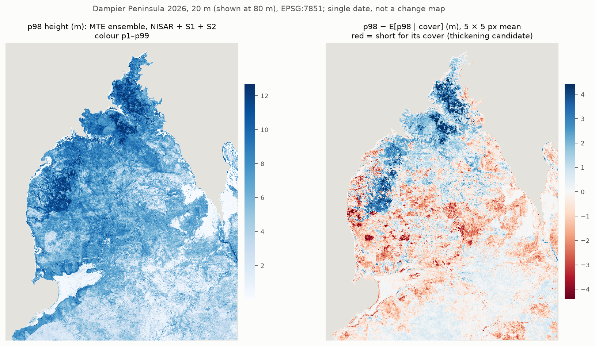

5 · The p98 residual: tall or short for its cover
r = p98 − g(cover), g(c) = E[p98 map | cover map]. MTE maps, 20 m, EPSG:7851, 2026, single date.

--model MTEResult
| Item | Value |
|---|---|
| Product (use this) | p98_resid_w5_MTE.tif (not yet available) — 5 × 5 px (100 m) mean |
| Per px | p98_resid_MTE.tif (not yet available) |
| Inputs | height_p98_MTE.tif (not yet available), cover137_MTE.tif (not yet available) (4 · Regression) |
| g(cover) on the map, m | g(0) 0.02 · g(0.5) 7.92 · g(1) 10.18 |
| Residual, map, 5 × 5, m | p5 −1.93 · p25 −0.69 · p50 −0.03 · p75 +0.50 · p95 +2.26 |
| Residual, map, per px, m | p5 −2.08 · p25 −0.74 · p50 −0.04 · p75 +0.57 · p95 +2.38 |
| Map mean, pindan | +0.04 m (mainland 0.00) |
g: class_defs\mte_retro.log, 2026 maps line. Percentiles: all valid px of the two rasters
(64.3 M / 64.4 M), computed 2026-11-05. Pindan mean: REPORT_mte_retro.txt §5.
Skill of the residual per px (K-fold, optimistic: neighbours share training data)
| group | R² | RMSE (m) | bias (m) |
|---|---|---|---|
| pooled | 0.498 (0.011) | 1.555 (0.020) | -0.158 |
| Dampier | 0.446 (0.014) | 1.611 (0.021) | -0.166 |
| Yawuru kept | 0.635 (0.012) | 1.001 (0.020) | -0.087 |
Per px, against the LiDAR residual. g fitted on the training-fold labels. Fold mean (fold SD).
source: class_defs/outputs/mte_retro/2026/resid_fold_metrics.csv (2026-11-04 18:39)
Window skill (3 × 3, 5 × 5) was measured for the first model only, not for the MTE. The 5 × 5 mean is the product because it smooths px noise; its skill is not stated here.
How we got here
- p98, not the px mean, is the height axis: the px mean is mostly cover (window r(mean, cover) median 0.82).
- A direct p98 model beats p98 rebuilt from the mean and cover maps (tested with the first model). The MTE has a p98 head.
- g is fitted on the map pairs, not the label pairs (label sites sit 1–2 m above the scene at cover 0.2–0.5).
- A local-correlation map r(p98, cover) had no skill (K-fold R² < 0). Rejected. Detail: REPORT_p98_cover.txt.
How to read it
- Red: shorter than usual at that cover → shorter, denser vegetation (thickening candidate).
- Blue: taller than usual at that cover → taller, more open vegetation.
- Same contrast as the 2-D structure classes S4 "dense, shorter" vs S3 "open, tall" (3 · Classification), but continuous.
- Over time: 6 · Time pattern.
Caveats.
Single date: red is "short for its cover now", not "cover went up, height did not".
Post-fire resprouting, coastal and mangrove edges and input seams also read as negative.
Many red patches have straight edges (fire scars or S1 / NISAR / S2 seams): not yet checked against NAFI.
Values away from the label sites are not verified. K-fold is optimistic.
Code
- mte_retro.py (maps, residual, K-fold residual skill; all years).
- Method of the residual: p98_cover.py.
- Report: REPORT_mte_retro.txt §2, §5.